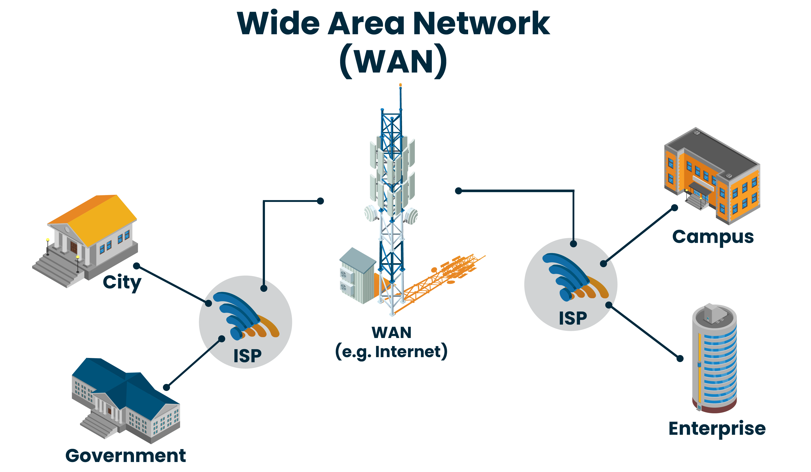

🔗 Introduzione alle Reti
Le reti di computer permettono la connessione e la comunicazione tra dispositivi attraverso mezzi fisici e wireless. Sono essenziali per la condivisione di dati, l'accesso a internet e l'interconnessione tra utenti e dispositivi in tutto il mondo.
🌐Personal Area Network
Una Personal Area Network (PAN) è un tipo di rete informatica molto piccola, progettata per collegare dispositivi personali in un’area ristretta, tipicamente entro pochi metri (circa 10 metri).
- Caratteristiche principali di una PAN:
- Ambito personale: collega dispositivi come smartphone, laptop, tablet, cuffie, smartwatch, stampanti.
- Spazio ristretto: di solito opera intorno alla persona, in una stanza o in un piccolo ufficio.
- Tecnologie usate: Bluetooth (la più comune), USB (connessione cablata),IrDA (a infrarossi, ormai poco usata),Wi-Fi Direct o Wi-Fi personale (per connessioni dirette senza router)
- Vantaggi:Basso consumo energetico,Facile configurazione,Mobilità e comodità
📡 Local Area Network
Una LAN (rete locale) è una rete informatica che collega computer e dispositivi in un’area geografica limitata, come una casa, un ufficio, una scuola o un edificio.
Caratteristiche principali della LAN:
- Area limitata Copre ambienti come edifici o piccoli campus
- Alta velocitàTrasferimento dati tipicamente tra 100 Mbps e 10 Gbps
- Bassa latenza Comunicazioni rapide tra dispositivi
- Componenti
Switch: instrada i pacchetti tra dispositivi all’interno della rete
Router: collega la LAN a Internet
Cavi Ethernet o Wi-Fi: per la connessione fisica o wireless
PC, stampanti, server, NAS: dispositivi connessi alla rete
Un protocollo di rete è un insieme di regole stabilite che specificano come formattare, inviare e ricevere dati in modo che gli endpoint della rete, inclusi computer, server, router e macchine virtuali, possano comunicare nonostante le differenze nelle loro infrastrutture e standard.
Wide Area Network
La WAN (Wide Area Network, ovvero rete geografica) è una rete informatica che collega tra loro dispositivi o reti locali (LAN) su grandi distanze geografiche, anche a livello mondiale.
- Estensione geografica Collega città, regioni, paesi o continenti
- Connessione remota Unisce LAN distanti tra loro, spesso tramite Internet
- Gestione centralizzata Solitamente gestita da provider di telecomunicazioni
- Velocità variabile Più lenta di una LAN, ma molto ampia in scala
- Uso comune Connessioni aziendali, Internet, reti tra filiali di aziende

Global Area Network
Un GAN (Generative Adversarial Network, ovvero Rete Generativa Avversaria) è un tipo di rete neurale profonda composta da due modelli che si sfidano tra loro durante l’addestramento:
- Generatore (Generator): Collega città, regioni, paesi o continenti
- Discriminatore (Discriminator) Unisce LAN distanti tra loro, spesso tramite Internet
- Come funziona: Solitamente gestita da provider di telecomunicazioni
- Obiettivo: Il GAN raggiunge il suo scopo quando il discriminatore non riesce più a distinguere tra dati reali e generati (cioè ha un’accuratezza del 50%: sta "tirando a indovinare").
- Applicazioni dei GAN:
Generazione di immagini (esempio volti realistici, arte digitale)
Aumento di risoluzione(super-resolution)
Traduzione tra stili (es. trasformare foto in dipinti)
Predizione di video
Creazione di dati sintetici per addestrare altri modelli.